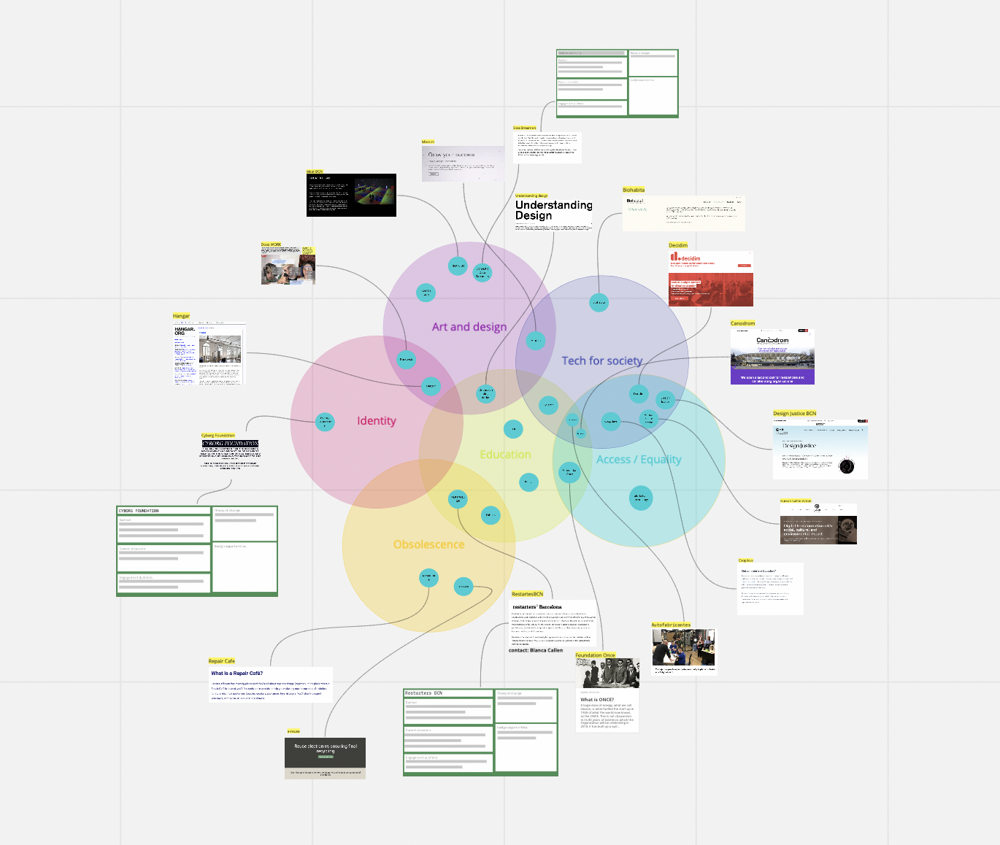
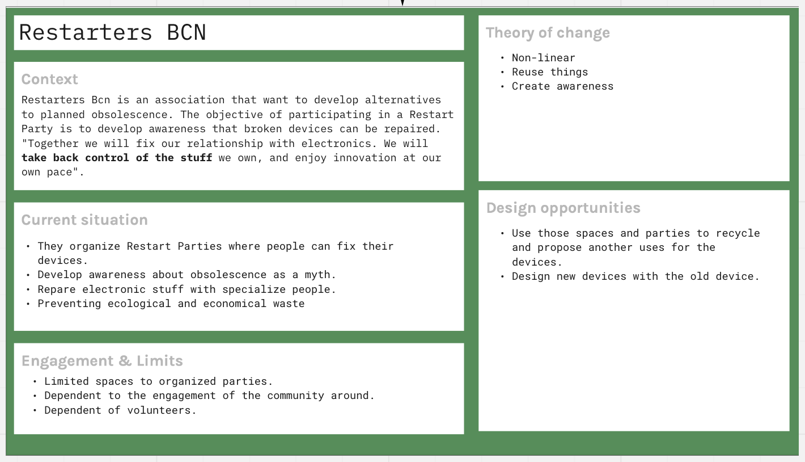
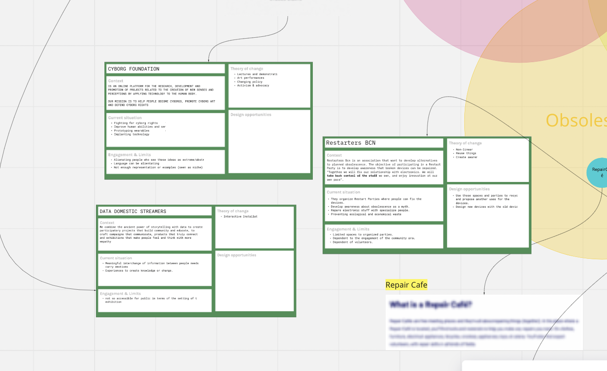
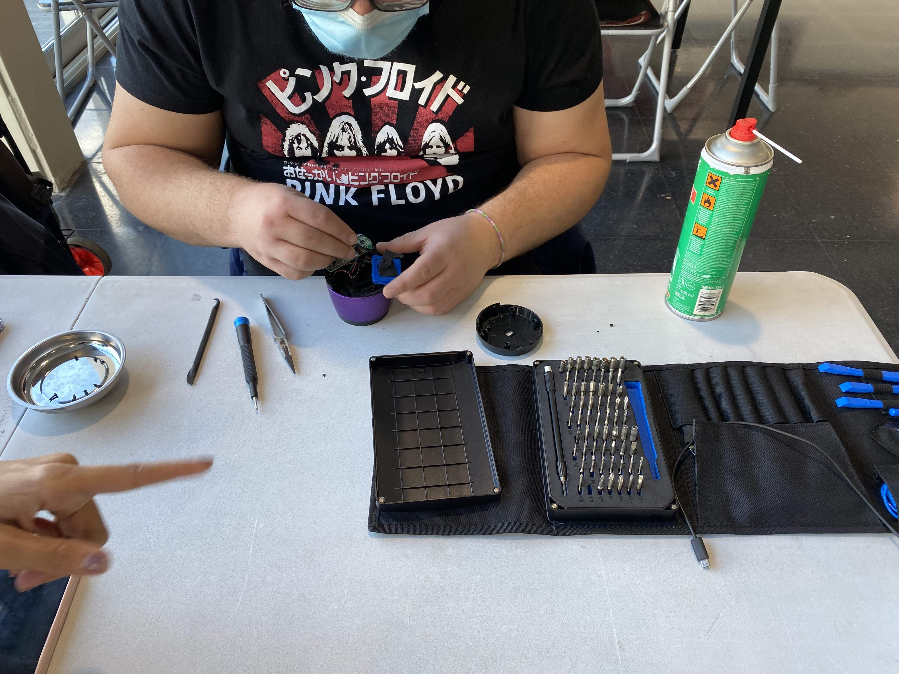
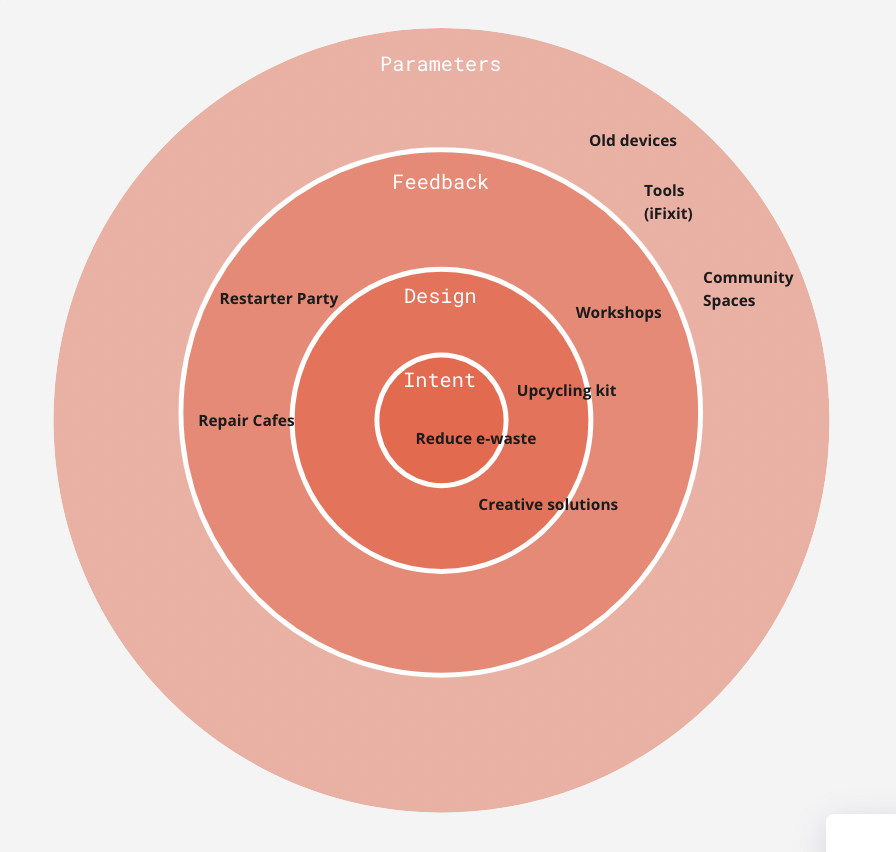

Community Engagement
Working as a group, we came up with several topics of interventions that ranged from exploring digital and physical identities to the planned obsolescence of technological devices.
One of our challenges was to make opportunities to modify, recycle and upcycle old devices in order to prevent the massive electronic waste and enable individuals to take control of their devices.
Through the 4D mapping exericse, I gathered a new method that helps to reveal the hidden relationships and complexity that may be invisible in language. By embodying a non-living idea (system), I felt we were able to reflect on our own projections and feelings without any sensored layers.
Working with the body to approach data and information is still a new approach for me, but I am interested to learn and explore more in this field.
In our next step, we searched for local creative communities who are actively working on our topics of interest.
From this research, we created a map of organizations and individuals who are local and we can get connected with. We had the question of how we can plan an intervention with these group of people (vs a target group for example).

Diving more in depth on a selected few organizations to better understand who they are, what they are involved in, their weak signals, and how we can contribute.
In this example, we looked into Restarters BCN, an association that is focused on Restarters BCN, an organization that wants to develop alternatives to planned obsolescence in technology devices and bring awareness to the community that broken devices can be repaired and reused.
They were doing great work in fixing broken gadgets, but did not have any opportunities to upcycle or create new products with things that couldn't be repaired.


There happened to be a Restarter Party on Saturday 11/27, so we signed up to repair a broken speaker. On saturady morning, Aparna and I visited the Restarters Party in the Sant Marti neighborhood. The "party" was in a community center: a few tables with volunteers
who sat down with the clients to take apart and fix the devices. We sat with a volunteer who took apart the speaker to assess the situation and kindly explained the process and answered all our questions regarding the process and the technicalities of the organizations.
We are currently synthesizing this data into a potential intervention (more to come soon).

In my next steps, I will continue building on this circular diagram and add the relevant information as we narrow down on our intervention.
